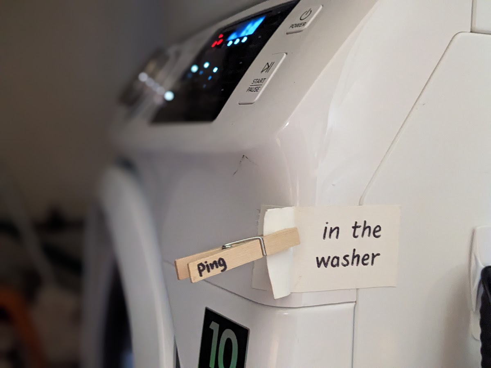

put a pin on it
solving the dishes problem
Dirty dishes left in the sink! The most common conflict that tears houses apart. One person innocently forgets a dish. Others add to the pile. The pile gets so tall that dishes can’t even be easily washed in the sink anymore. Even if each resident only leaves one dish -- 15 dishes in the sink is a monster to be reckoned with.
The most common solution I’ve seen to this is using clothespins with names written on them.
If someone needs to leave a dish before they can wash it, they put their clothespin on it to mark that it’s theirs and that they intend to return to it.
This is helpful for many reasons!
- Clothespins remind the dish-leaver about their dish and increase the likelihood of it being cleaned later.
- Needing to grab a clothespin creates a higher barrier to leaving dishes. If there’s an existing pile of dishes, no one can slyly add to it (“what difference is one more dish?”).
- It feels less hopeless when there are a lot of dirty dishes laid around. Since people know where the dishes came from, they can talk to people and troubleshoot if dishes are getting in the way. Maybe clothespins will help some people realize they need to wash their dishes sooner, or maybe they’ll show that common-use dishes (e.g. a tray of cookies) often end up being the culprit.
The main issue I've seen with this system is people forgetting to use the clothespins. Keeping the clothespins stored as close as possible to where they would be used can help with this (e.g. above the sink).
Clothespins can be used for many other temporary labeling needs:
- labels like “meat”, for dietary restrictions and allergies, clipped onto serving pots
- “eat me!”, clipped onto snacks left out for the house
- “communal”, for dishes that don’t belong to anyone in particular, e.g. tupperware holding old food that was cleared out of the fridge
- “help me?”, alongside a person’s name to acknowledge it’s their dish (and their responsibility) but also expressing that it would be really helpful if someone could clean it for them
The possibilities are endless!
a project left in common space

whose clothes are in the laundry